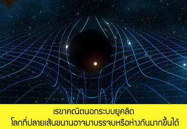

วิชาวิทยาศาสตร์

ทฤษฎีวิวัฒนาการโดยการคัดเลือกโดยธรรมชาติ (Natural Selection) ของชาลส์ ดาร์วิน อธิบายว่าสิ่งมีชีวิตที่มีลักษณะเหมาะสมกับสภาพแวดล้อมมากกว่าจะมีโอกาสอยู่รอดและสืบพันธุ์ถ่ายทอดลักษณะนั้นไปยังรุ่นลูกหลานได้มากกว่า เมื่อเวลาผ่านไปหลายชั่วรุ่น กระบวนการนี้จะค่อยๆ เปลี่ยนแปลงลักษณะของประชากรสิ่งมีชีวิตจนเกิดสปีชีส์ใหม่ขึ้น หลักฐานสำคัญที่ดาร์วินใช้สนับสนุนทฤษฎีนี้คือการสังเกตนกฟินช์หลากหลายสายพันธุ์บนหมู่เกาะกาลาปาโกส ที่มีรูปร่างจะงอยปากแตกต่างกันไปตามแหล่งอาหารบนแต่ละเกาะ ปัจจุบันทฤษฎีวิวัฒนาการได้รับการยืนยันเพิ่มเติมด้วยหลักฐานทางพันธุกรรมและซากดึกดำบรรพ์ และกลายเป็นรากฐานสำคัญของวิชาชีววิทยาสมัยใหม่